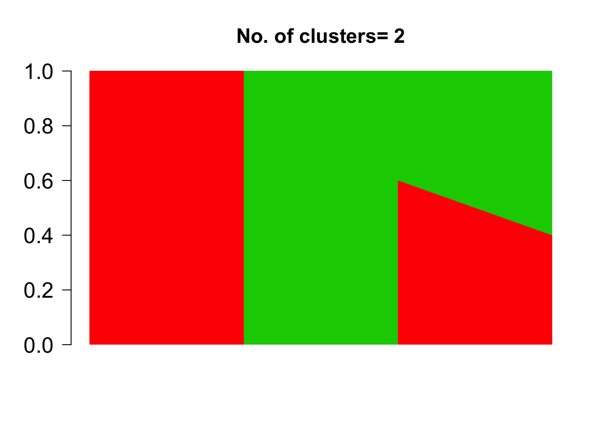

library(methClust)We present a Grade of Membership model for clustering samples based on the epigenetic data tracking the number of methylated and unmethylated CpG/GpC/hCh sites in genomic bins of fixed sizes across the genome. This is a companion package to the package CountClust [@Dey2017] designed to detect clusters based on gene expression patterns in single cells or bulk samples. In this model, we assume that each epigenetic mark in the genome comes from a specific methylation profile. However the data is recorded not at the level of a single site but rather as counts of methylated and non-methylated sites in genomic bins of fixed size. As a result, our methylation profiles will capture differences at best at the scale of a genomic bin.
First we present the underlying modeling framework of methClust. The basic algorithm is an EM algorithm which can be either accelerated using active set strategies or using SQUAREM acceleration [@Varadhan2004].
Consider a bisulfite sequencing experiment that records the number of methylated and unmethylated sites per bin across the genome. The number of methylated CpG/hCh sites in each bin \(b\) of sample \(n\) is assumed to follow a Binomial distribution.
\[ M_{nb} \sim Bin \left (Y_{nb} = M_{nb} + U_{nb} , p_{nb} \right ) \]
where \(M_{nb}\) and \(U_{nb}\) denote the number of methylated and unmethylated sites in bin \(b\) and for sample \(n\) respectively. \(p_{nb}\) represents the probability of methylation, and under the Grade of Membership model assumption, \(p_{nb}\) is assumed to have a lower dimensional representation.
\[ p_{nb} = \sum_{k=1}^{K} \omega_{nk} g_{kb} \]
\(\omega_{nk}\) represents the grades of membership of the \(n\)th sample in the \(k\)th methylation profile and \(g_{kb}\) represents the probability of methylation in bin \(b\) for the \(k\)th methylation profile.Note that here we assume for each cluster that the probability of methylation is same for all methylation sites in a particular bin. As a results, clusters only separate out at the scale of the genomic bins.
Intuitively we assume that each bin comprises of methylations coming from one of the \(K\) methylation profiles or clusters in the grade of membership model.
For each CpG site \(s\) in sample \(n\), we define a latent variable \(Z_{nks}\) to be an indicator variable for cluster/profile \(k\).
\[ Pr (Z_{nks} = 1 ) = \frac{\omega_{nk} g_{k, b(s)}}{\sum_{l} \omega_{nl} g_{l, b(s)}} = p_{nk,b(s)}\]
where \(b(s)\) denotes the bin the site \(s\) belongs to.
Denoting by \(Y_{nb}\) the total number of sites in the bin \(b\), we write
\[ Y_{nb} = Y_{n1b} + Y_{n2b} + \cdots + Y_{nKb} \]
where
\[ Y_{nkb} = M_{nkb} + U_{nkb} \]
is the total number of hCh sites in bin \(b\) and sample \(n\) that are assigned to the \(k\) th methylation profile.
Given \(Y_{nkb}\), the number of methylated sites in cluster \(k\) in sample \(n\) and bin \(b\), namely \(M_{nkb}\) follows a Binomial distribution.
\[ M_{nkb} | Y_{nkb} \sim Bin (Y_{nkb}, g_{kb} ) \]
\[ \left( Y_{n1b}, Y_{n2b}, \cdots, Y_{nKb} \right ) \sim Mult \left (Y_{nb} ; \omega_{n1}, \omega_{n2}, \cdots, \omega_{nK} \right ) \]
One can show that
\[E \left ( M_{nkb} | Y_{nb} \right) = E \left( \left (M_{nkb} | Y^{(t)}_{nkb} \right) | Y_{nb} \right ) = E \left ( Y_{nkb} g^{(t)}_{kb} | Y_{nb} \right ) = Y_{nb} \omega^{(t)}_{nk} g^{(t)}_{kb} \]
But we would like to compute $ E(M_{nkb} | M_{nb} ) $
We know that
\[ \sum_{k} E(M_{nkb} | M_{nb} ) = M_{nb} \]
\[ E \left( M_{nb} | Y_{nb} \right) = \sum_{k=1}^{K} E \left ( M_{nkb} | Y_{nb} \right) = Y_{nb} \sum_{l} \omega^{(t)}_{nl} g^{(t)}_{lb} \]
\[ A^{(t)}_{nkb} = E \left (M_{nkb} | M_{nb}, Y_{nb} \right ) = M_{nb} \frac{\omega^{(t)}_{nk} g^{(t)}_{kb}}{\sum_{l} \omega^{(t)}_{nl} g^{(t)}_{lb} } \]
Similarly one can show that
\[ B^{(t)}_{nkb} = E \left (U_{nkb} | U_{nb}, Y_{nb} \right ) = U_{nb} \frac{\omega^{(t)}_{nk} (1 - g^{(t)}_{kb})}{\sum_{l} \omega^{(t)}_{nl} (1 - g^{(t)}_{lb}) } \]
Assume now \(M_{nkb}\) and \(U_{nkb}\) are the latent variables in the EM algorithm. Then the EM log-likelihood is given by
\[\begin{eqnarray} E_{L | Data} \left [ \log Pr (Data, L | Param) \right ] & = \sum_{n, b} \sum_{k} E_{U_{nkb}, M_{nkb} | M_{nb}, U_{nb}, \omega, g} \left [ \log Pr (U_{nkb}, M_{nkb}, M_{nb}, U_{nb} | \omega, g \right ] \\ & \propto \sum_{n, b} \sum_{k} A^{(t)}_{nkb} \times \log(\omega_{nk} g_{kb} ) + B^{(t)}_{nkb} \times \log (\omega_{nk} (1 - g_{kb} ) ) \\ & \propto \sum_{n, b} \sum_{k} \log(\omega_{nk}) (A^{(t)}_{nkb} + B^{(t)}_{nkb} ) + \log(g_{kb}) A^{(t)}_{nkb} + \log(1- g_{kb}) B^{(t)}_{nkb} \\ \end{eqnarray}\]Optimizing for \(\omega^{(t+1)}_{nk}\) under the constraint that \(\sum_{k=1}^{K} \omega^{(t+1)}_{nk} = 1\), we get
\[ \omega^{(t+1)}_{nk} = \frac{\sum_{b} (A^{(t)}_{nkb} + B^{(t)}_{nkb} )} {\sum_{l}\sum_{b} (A^{(t)}_{nlb} + B^{(t)}_{nlb} )} = \frac{1}{Y_{n+}} \sum_{b} (A^{(t)}_{nkb} + B^{(t)}_{nkb}) \]
where \(Y_{n+}\) is the total number of sites for sample \(n\).
Similarly, we can get the estimates for \(g^{(t+1)}_{kb}\) as
\[ g^{(t+1)}_{kb} = \frac{\sum_{n} A^{(t)}_{nkb}} {\sum_{n} (A^{(t)}_{nkb} + B^{(t)}_{nkb} )} \]
We now discuss the implementation of the model.
\[ log \left (\frac{M_{nb}}{U_{nb} + M_{nb}} \right ) = \omega_{N \times K}g^{(0)} _{K ]\times B} + \epsilon \] which we solve to estimate \(\omega^{(0)}\).
We then use the \(g^{(0)}\) and \(\omega^{(0)}\) values as starting points to a methClust model fit on a small sample training data to get refined estimates \(g^{(1)}\) and \(\omega^{(1)}\), which then form the starting points of the EM algorithm.
\[ A^{(t)}_{nkb} = M_{nb} \frac{\omega^{(t)}_{nk} g^{(t)}_{kb}}{\sum_{l} \omega^{(t)}_{nl} g^{(t)}_{lb} } \hspace{2 cm} B^{(t)}_{nkb} = U_{nb} \frac{\omega^{(t)}_{nk} (1 - g^{(t)}_{kb})}{\sum_{l} \omega^{(t)}_{nl} (1 - g^{(t)}_{lb}) } \]
\[ \omega^{(t+1)}_{nk} \propto \sum_{b} (A^{(t)}_{nkb} + B^{(t)}_{nkb}) \hspace{2 cm} g^{(t+1)}_{kb} = \frac{\sum_{n} A^{(t)}_{nkb}} {\sum_{n} (A^{(t)}_{nkb} + B^{(t)}_{nkb} )}\]
\[ (\omega_{n1}, \omega_{n2}, \cdots, \omega_{nK}) \sim Dir \left ( \frac{1}{K}+1, \frac{1}{K} + 1, \cdots, \frac{1}{K}+ 1 \right ) \]
which changes the EM updates for \(\omega\) only slightly
\[ \omega^{(t+1)}_{nk} \propto \sum_{b} \left (A^{(t)}_{nkb} + B^{(t)}_{nkb} + \frac{1}{K} \right ) \]
\[ \nabla (\omega_{nk}) = \sum_{b=1}^{B} \frac{M_{nb} g_{kb}}{\sum_{l} \omega_{nl} g_{lb}} - \sum_{b=1}^{B} \frac{U_{nb} g_{kb}}{\sum_{l} \omega_{nl} (1 - g_{lb})} + (1/K \omega_{nk})\] \[ Hess(\omega_{nk}, \omega_{nh}) = H_{kh} = - \sum_{b=1}^{B} \frac{M_{nb} g_{kb}g_{hb}}{\left(\sum_{l} \omega_{nl} g_{lb} \right)^2} - \sum_{b=1}^{B} \frac{U_{nb} g_{kb}g_{hb}}{\left (\sum_{l} \omega_{nl} (1 - g_{lb}) \right)^2} + \mathbb{I}_{k=h} (1/K \omega^2_{nk})\]
We solve for the equation for each \(n\)
\[ -H \Delta_{n} + \lambda_{n} = \nabla_{n} \hspace{1 cm} 1^{T} \Delta_{n} = 0 \] where \(\Delta_{nk} = \omega_{nk} - \omega^{(t+1)}_{nk}\) where \(\omega^{(t+1)}_{nk}\) is the update from the EM algorithm step above. We solve this using active set strategy with the solution for \(\Delta\) obtained from above equation. This results in a new update \(\omega^{(t+1)}\) that satisifies
\[ \omega^{(t+1)}_{nk} \leftarrow \omega^{(t+1)}_{nk} + \delta_{n} \Delta_{n} \]
where \(\delta_{n}\) is the maximum value that satisfies \(\delta_{n} \Delta_{nk} < - \omega^(t)_{nk}\) for all \(k\).
We have found this strategy to accelerate the speed of convergence compared to the regular EM updates.
at each step and take the difference between log posteriors between each successive steps
\[ diff (t) = \log \mathbf{L} (M, U, \omega^{(t+1)}, g^{(t+1)}) - \log \mathbf{L} (M, U, \omega^{(t)}, g^{(t)}) \]
This difference will eventually tend to \(0\) as the algorithm converges, so we set a tolerance tol so that the algorithm stops if at step \(t\), \(diff(t)\) becomes lower than tol.
Here we present a small demo of how methClust can be used to fit a Grade of Membership model on a simulated example. This example will be replaced with a more appropriate real example with the further development of this package.
We first define the grades of membership matrix \(\omega_{N \times K}\) where \(N\) is the number of samples and \(K\) is the number of clusters
n.out <- 500
omega_sim <- rbind( cbind( rep(1, n.out), rep(0, n.out)),
cbind( rep(0, n.out), rep(1, n.out)),
cbind( seq(0.6, 0.4, length.out = n.out),
1- seq(0.6, 0.4,length.out=n.out)) )
K <- dim(omega_sim)[2]
barplot(t(omega_sim),
col = 2:(K+1),
axisnames = F, space = 0,
border = NA,
main=paste("No. of clusters=", K),
las=1, ylim = c(0,1), cex.axis=1.5,cex.main=1.4)
Next we define the cluster profiles \(f_{K \times B}\) where $ 0 f_{kb} 1$ and \(B\) denotes the number of genomic bins that the genome has been partitioned into.
m.out <- 200
freq_sim <- cbind(c(rep(0.8, m.out), rep(0.2, m.out), rep(0.5, m.out), rep(0.01, m.out)),
c(rep(0.01, m.out), rep(0.01, m.out), rep(0.5, m.out), rep(0.8, m.out)))We next define matrices for the number of methylated sites \(M\) and unmethylated sites \(U\) per sample annd per bin, which are assumed to obey Equation 1.
prob <- omega_sim %*% t(freq_sim)
Y <- matrix(rpois(dim(prob)[1]*dim(prob)[2], 1000), dim(prob)[1], dim(prob)[2])
M <- matrix(0, dim(Y)[1], dim(Y)[2])
for(m in 1:dim(Y)[1]){
for(n in 1:dim(Y)[2]){
M[m,n] <- rbinom(1, Y[m,n], prob = prob[m,n])
}
}
U = Y - MWe now fit the function in methclust taking the matrices of the counts of methylated sites and unmethylated sites across the genomic bins for each sample and \(K\) as in the number of clusters.
topics <- meth_topics(M, U, K=2, tol = 10, use_squarem = FALSE)##
## Estimating on a 1500 samples collection.
## log posterior increase: 67655205.3, 70545.4, 182.7, 172, 66.8, 19.8, 10.9, done.the use_squarem = FALSE option uses the active set strategy due to Taddy et al 2012 [@Taddy2012], while the use_squarem=TRUE uses the SQUAREM implementation [@Varadhan2004] which has been found to be slighlt slower in comparison. indicates the threshold for the difference in posterior in consecutive iterations of the EM algorithm.
The output is a list consisting of the fitted \(\omega\) and \(freq\) matrices, as well as the the log posterior of the resulting fit.
topics$omega[1:2,]## topic
## document 1 2
## doc 1 0.008680722 0.9913193
## doc 2 0.009211811 0.9907882topics$theta[1:2,]## NULLtopics$L## [1] -542546729The estimated grades of membership matrix topics$omega was observed to match the true grade of membership matrix omega_sim closely, thereby serving as a validation of the model implementation.
barplot(t(topics$omega),
col = 2:(K+1),
axisnames = F, space = 0,
border = NA,
main=paste("No. of clusters=", K),
las=1, ylim = c(0,1), cex.axis=1.5,cex.main=1.4)This R Markdown site was created with workflowr